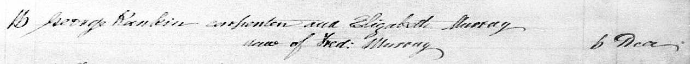
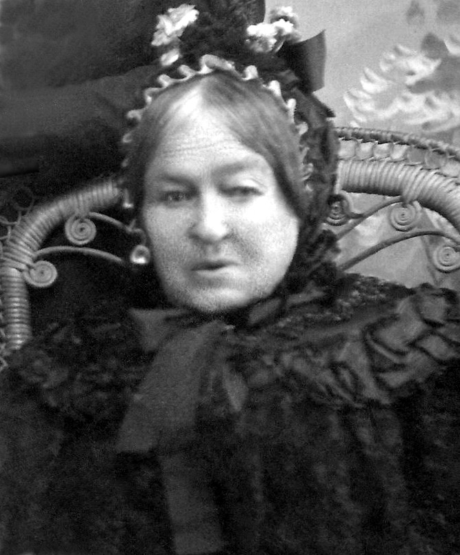

-
The Rankins in Australia
a work in progress ....

George Rankin (1817–1898) and Elizabeth Pennycook Murray (1815–1900)
When George and Elizabeth arrived in Australia early in 1844, they were first located at Shellharbour, 70 miles south of Sydney. A few months after they arrived, two more of our ancestors, Thomas and Harriet Fenwick, also turned up in Shellharbour. Their son, Robert Fenwick ended up marrying George and Elizabeth's daughter, Hellen Rankin. Hellen and Robert became our great-grandparents. When Thomas and Harriet relocated to Wollongong, 17 miles north of Shellharbour, George and Elizabeth did too. Again when Thomas and Harriet returned to Shellharbour, as it was then known, George and Elizabeth were there as well. George set up business as a contractor, first repairing and rebuilding, then taking on large projects such as building bridges and wharves with his sons, David and Frederick. Many of the contracts went through the Shellharbour Council where Thomas was three times Mayor.1839 December 16 - Marriage of George Rankin, carpenter, and Elizabeth Murray, daughter of Fred. Murray
George's son David Rankin managed to get his first bridge building contract further north in the Clarence River district. George and family followed, and so did Thomas's eldest son, Robert Fenwick with his wife Hellen. From there they all stuck together as they moved their way further northwards until reaching the Richmond River district, close to where another of our ancestors, Duncan McIntyre, was settled at Wardell. At least one of David Rankin's children, Ernest Charles David, was born in Wardell. Later, David and George settled at Bexhill, alongside Corndale where Duncan McIntyre's daughter, our great-grandmother Jessie (McIntyre) McDonald, lived out the rest of her days, till she passed away in 1916. As a matter of further conincidence, Duncan McIntyre's father-in-law, Joseph Kelly, was buried in the Dundee Howff where many of the Rankin family members came to their final rest.
» George Rankin (1817–1898)Elizabeth Pennycook Murray
c1900, shortly before she died
married Elizabeth Pennycook Murray (1815–1900) in Dundee, Angus, 16.12.1839and they had the following children:
(unnamed) Rankin 22.12.1840 –
*Lochee22.12.1840
†Locheestillborn George Rankin ??.??.1842 –
*Lochee28.02.1843
†Locheeunder 1 year David Rankin 26.12.1844 –
*Jamberoo24.09.1919
†Lismorem. Jane Price in Kiama, 19.11.1877 Frederick Rankin 04.10.1848 –
*Shellharbour19.09.1923
†Moore Parkm. Sarah Ann McPaul in Dapto, 18.12.1878 Hellen Rankin 12.09.1850 –
*Albion Park14.10.1940
†Cooroym. Robert Thomas Fenwick in Shellharbour, 05.02.1873 Isabella Rankin 15.01.1854 –
*Shellharbour07.08.1923
†Tweed Headsm. William Henry Powell, 1873 Rosa Jane Rankin 26.10.1855 –
*Jamberoo02.06.1936
†Lismorem. Alexander Thorburn in Wyrallah, 25.01.1881
The four youngest children of George Rankin and Elizabeth Pennycook Murray:
work in progress ....
from newspaper articles, records etc., mostly to track locations:
George. The hard-working, choleric and irascible 'bad egg'.
TIMELINE:
1860 assault on wife, one month's imprisonment in Wollongong gaol, and find sureties to keep the peace for six months, himself for 50 pounds a further two lots of 25 pound each, having beaten her over one hundred times and beaten the children unmercifully
1867 Shellharbour, assault on Dennis Foley while erecting a bridge for a road that ran through Foley's land. Fined 20s or 24hrs imprisonment. Fine was paid.
1870 December, tender for erection of Mullet Creek bridge was accepted
1871 August, tender for erecting a pile-bridge across Bovards Creek was blocked by mayor
1873 Ulmarra advert from George
1875 tender accepted for bridge at C.Everingham's, by Ulmarra Councily
1876 retort in Clarence and Richmond Examiner over hand rail on bridge over Deep Creek
1878 tenders wanted for hewn timber for bridge over James Creek, to be forwarded to George at Serpentine Bridge, North Arm by Sept 10, 1878
1881 August tenders wanted for girders and piles
1882 April tenders wanted for girders, piles and planking
1894 conditional purchase Lismore 15a 2r 25p porions 65,66,67 parish Bexhill 5pound per acre
1895 April and May, tender accepted, George Rankin of Lismore for erection of wharf and approach at Wyrallah
1897 October, tender accepted for wharf and approach at East Coraki R.R.
1898 April 4, George, father of David Rankin of South Lismore, died at his residence, Bexhill.
1898 April 12, Inquest into Georges's death. Verdict: Senile decay and old age.
Elizabeth. The suffering wife.
TIMELINE:
1844, at Shellharbour and Illawarra for some years,
Then in the Clarence district, for a number of years,
Finally in Richmond River district, till her death in 1900
leaves behind sons, daughters and 39 grandchildren on Richmond River, Tweed River and South Coast
left behind 3 daughters and 2 sons, incl. Mr. F. Rankin of Unanderra
David. The hard working son and all round nice guy.
TIMELINE:
About 1871, aged about 27, in the Clarence district
built many a bridge and wharf in the Clarence, Richmond and Tweed Districts
1873 built bridge over Alumny Creek
then over Whiteman's creek and another on the Newton Boyd road
and over the Nymboida
moved to Richmond district
where he first built a bridge over Immigrant Creek, near Ballina
from the Clarence to the Tweed in all directions are to be found bridges and wharves built by Davie Rankin
1877 contractor of Charcoal Road, Kiama, married Jane Price of Kiama
1879 auction of David Rankin's 50a farm, portion 21, at Ulmarra, contact Mr Fenwick now on the farm
1880 auction of David Rankin's household furniture & effects and contractor's plant and draught mare
1883 Broadwater, 3 year old (only) son Donald died (was their only child to be born in Grafton)
1886 tenders accepted for wharves at Wardell and Swan Bay
1890 tenders wanted to draw 25000 feet of timber, contact D.Rankin Junction Hotel, North Lismore
1894 August, Lismore, Bankruptcy Court, voluntary sequestration: David Rankin, of Lismore, contractor
1893 September, notice to creditors re Bankrupty No. 8636
took a break from bridge building to be proprietor of Junction Hotel, North Lismore
shortly after he retired from hotel keeping, his wife died in 1898
David and his wife Jane Price were both born in Jamberoo
passed away, aged 75, at Mr. Thorburn's South Lismore
1919 24 September, passed away, loved father of Edith Rankin, Mrs N.E.Fiddes and Mrs R.W.McGill
left behind 2 sons and five daughters:
Mrs Butt, Boatharbour
Mrs Turner, Gympie
Mrs Fiddies, Misses Mabel and Edith, Sydney
sons Ernest and David
also a brother, Frederick, Sydney
and three sisters:
Mrs Fenwick, Cooroy
Mrs Powell, Tweed Heads
Mrs Thorburn, South Lismore
and three granchildren
his sons served in the war, David died and Ernest returned 1 week before his father's death
1919, for our late brother, A Lodge of Sorrow from Richmond River Masonic Lodge
1919, October 21, son Ernest Charles David Rankin married Caroline May Seccombe of Wollongbar
1919, November 27, Probate request by David Butt of Bexhill executor of Will of David Rankin
1935, June 25, death of Elsie Ann (Rankin) Fiddes at Bellevue Hill, Sydney, sister of Edith Rankin and Mrs R.W.McGill
1939, March 9, death of Mabel Grace (Rankin) McGill, at Newcastle, wife of Robert William McGill of Hamilton and sister of Edith Maud and Ernest Rankin, Sydney, Mrs D.Butt, Lismore, Mrs Ted Turner, Brisbane.
1951, October 31, funeral of Elenor Jane (Rankin) Butt, wife of Mr David Butt of Boatharbour
1972 death of Jessie Euphemia (Rankin) Turner
Frederick. Another hard working son (but the apple doesn't fall far from the tree)
TIMELINE:
1883 farm to let on the river bank at Great Marlow, Grafton
1886 56a farm to let on the river bank at Great Marlow, Grafton
1886 56a farm up for auction on the river bank at Great Marlow, Grafton
Hellen. The caring daughter.
TIMELINE:
{kind=link}
{kind=link}
{kind=link}
{kind=link}
{kind=link}
{kind=link}
About Us
We are the descendants of Anglo-Scottish-Prusso-Germanic Australian migrants who settled in the newly formed colonies of New South Wales and Queensland in the nineteenth century. The idea behind these pages is to present the stories and characters of those early settlers along with information about their origins, descendants, families, whereabouts and activities.There are often themes running through their struggles and achievements telling a tale of resourcefulness and hardships in an alien world. The paradox of Australia as an ancient and raw continent and as a 'New World' portrays a collision of ideals and realities yet still shows a continuity in how those people dealt with everyday life.